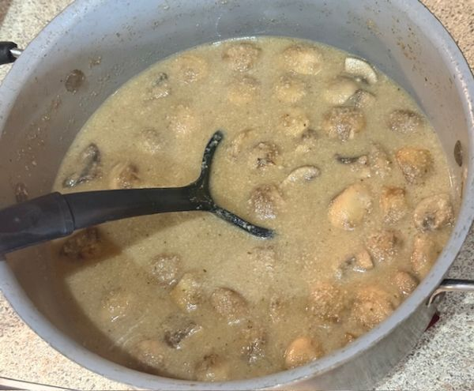
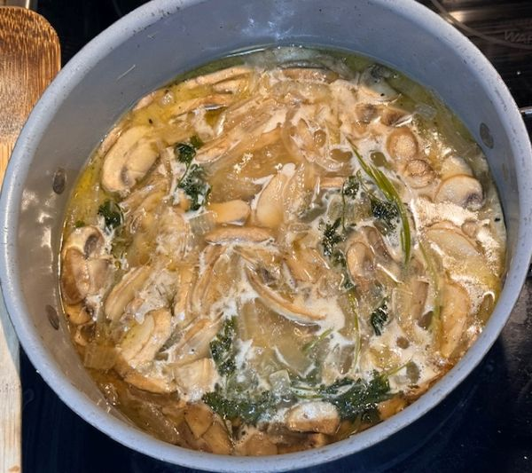

Return to Odin Recipes Homepage
Mushroom Soup

Description
Enjoy a nice pot of hot mushroom soup on a cold winter day! This recipe is simple with
few ingredients based off a recipe by
Anthony Bourdain. It is quick to throw together, but does take time for the flavors to
develop. Not much work, and very worth the wait!
Ingredients
- 6 Tablespoons of butter
- 1 Onion sliced
- 12 oz sliced button mushrooms
- 4-6 oz whole button mushrooms
- 4 cups chicken stock
- 1-2 sprigs of parsely
- 2 ounces of sherry
- 4 Tablespoons olive oil
- salt & pepper to taste
Steps
- Melt 2 tablespoons of butter into a pan at medium heat and lightly saute onion until
just beginning to become transluscent. (approximately 3-5 mins)
- Add remaining butter and sliced mushrooms. Continue to cook for 8 minutes.
- Stir in stock and parsley and bring mixture to a boil.
- Reduce to a simmer and cook for 1 hour.

- While soup is simmering, preheat oven to 425 F.
- Toss whole mushrooms in olive oil, salt and pepper.
- Spread whole mushrooms on baking sheet and bake 4-5 minutes until just beginning to brown.
- After soup has simmered for 1 hour, blend in blender or use immersion blender to make soup creamy.
- Add whole mushrooms from oven to soup as a garnish, and enjoy!
Note: when I used an immersion blender, the soup was not as creamy as I wouldve liked. It
seemed slightly gritty. In the future, I plan to alter this recipe to instead of sliced, dice
mushrooms real small and not blend them. I will add 1/2 cup of cream or milk, and 2 tablespoons
of flour in the last 10 minutes of the saute to make it creamier.